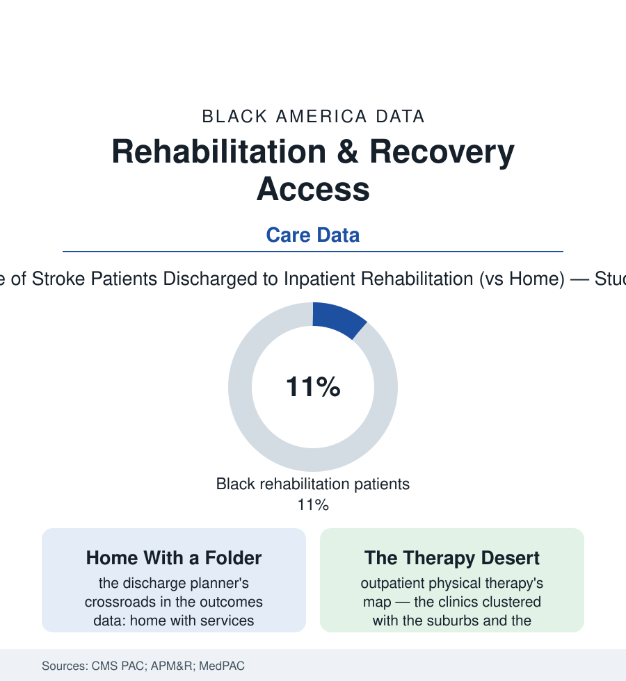

Black Public Health
The Recovery Gap: Rehabilitation After the Hospital Saves You
Surviving the stroke or the surgery is the first medicine; rehabilitation is the second — and Black patients are discharged home, instead of to rehab, at measurably higher rates. The recovery file.

Modern medicine's miracle has a sequel problem: the stroke survived, the hip replaced, the heart repaired — and then the long, unglamorous work of getting the body back, which is where the outcomes of the next decade are decided. Black patients enter that second medicine at lower rates and with less of it in the Medicare data: discharged home where white patients go to rehabilitation, attending fewer therapy sessions where they go at all. This article reads the recovery file.
The Discharge Crossroads
The pivotal moment is a planner's desk in the hospital's last days, and the post-acute data show its pattern across diagnosis after diagnosis: the stroke patient routed to an inpatient rehabilitation facility — the intensive three-hours-a-day setting where the recovery literature's best outcomes live — at lower rates for Black patients in the Medicare analyses, the skilled nursing facility and the home-with-services discharge absorbing the difference; the total joint replacement's newer pathways (the bundled-payment era's home-first protocols) sorting similarly in the orthopedic studies; the amputation file's rehab — the prosthetic training on which the PAD article's whole future turns — showing the starkest version, the prosthesis itself delayed or denied at rates the limb-loss registries record. The causes the research enters are the atlas's standard set wearing discharge paperwork: the assessment instruments themselves (the functional scores at admission translating into eligibility thresholds whose application the bias studies audit, the patient's family support scored as capacity in ways that penalize the household forms of the family-structure file), the bed geography (the rehab hospitals and quality SNFs sited with the suburbs, their acceptance patterns in the referral data preferring the better-insured), the insurance tier (the Medicare Advantage prior authorizations of the insurance file denying post-acute days at the rates the auditors keep publishing), and the family's own calculus — the rehab facility an hour away against the daughter's couch and the home-health nurse, a choice the data record without always hearing.
Cardiac rehabilitation is the file's most damning single exhibit, because its evidence is the strongest in the section: the supervised exercise-and-education course after a heart attack or bypass reduces subsequent mortality by a fifth to a third in the trial meta-analyses — and the participation data show eligible Black patients enrolling at roughly half the white rate in the Medicare analyses, with distance, referral omission, and cost-sharing each taking their documented share of the blame. The referral is the first leak in the pipe: the cardiology practices' automatic-referral systems, where they exist, erase most of the gap in the studies that installed them — the disparity thriving precisely in the space left to individual discretion, the same discretion the pain and transplant files keep auditing. A proven, covered, life-extending therapy, unused for want of a checkbox: the recovery gap in one line.
The Therapy Months
What happens after discharge writes the long outcome, and the utilization data trace a consistent attrition: the outpatient therapy course prescribed at twelve sessions attended at seven, the home-health therapy visits in the Medicare files shorter in total for Black patients after the same surgeries, the equipment file's small print (the wheelchair prescribed and the wheelchair delivered being different data series, the durable-medical suppliers' service map thinning into the same tracts as every other desert in this atlas). The workforce rows mirror the pattern — physical and occupational therapy among the health professions with the smallest Black shares in the workforce census, the rehab gym one more clinical space where the staff rarely shares the patient's world, the communication studies finding their usual tax in the exercise programs' adherence. The counter-evidence is, as ever, structural and specific: the stroke-recovery trials run through the safety-net systems achieving matched outcomes where the rehab was simply delivered, the telerehabilitation programs the pandemic forced into being posting their adherence numbers from the rural Black Belt, the community-based exercise programs — the church-hall stroke clubs, the Parkinson's boxing classes of the earlier article — filling the therapy desert with the institutions that are actually there. The recovery file's economics close the argument in the MedPAC tables: rehabilitation is among the few expenditures in the entire health file whose return is measured in restored function per dollar in study after study — the second medicine is not the expensive one. The expensive one is the dependence its absence buys.
Reading the Recovery Data
The hospital saves the life in days; the rehab decides what the life is like for decades — and its distribution, across the discharge planner's desk, follows the atlas's map as faithfully as any file here. The Medicare tables publish the destinations without comment. The families who learned to be therapists at kitchen tables could annotate every row.
More in Black Public Health
Hypertension Among Black Adults: Prevalence, Control, and Consequences
About 55 percent of Black adults have hypertension — the highest rate of any U.S. group. Prevalence, onset, control, and the stroke, heart, and kidney consequences in the data.
Diabetes Among Black Adults: Prevalence and Complications
Nearly one in five Black adults has diabetes, diagnosed or undiagnosed — and its complications fall with particular weight. The CDC data on prevalence, control, and outcomes.
Black Life Expectancy: The Gap at Birth and Its Causes
Black life expectancy at birth is about 73 years, roughly five years below the national figure — the summary measure of every health gap in this section. The CDC data.
Source: Centers for Medicare & Medicaid Services post-acute care data; Archives of Physical Medicine and Rehabilitation studies; MedPAC post-acute care reports.